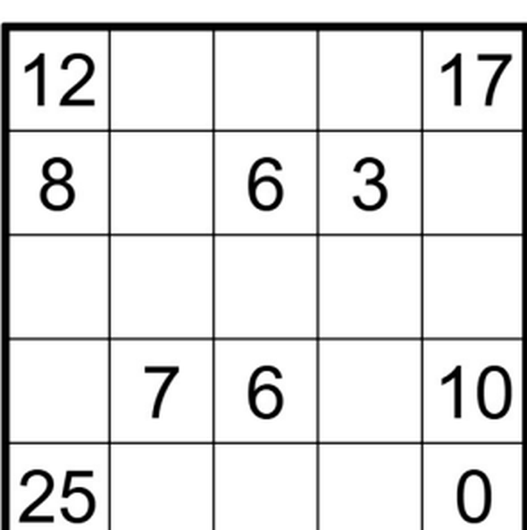
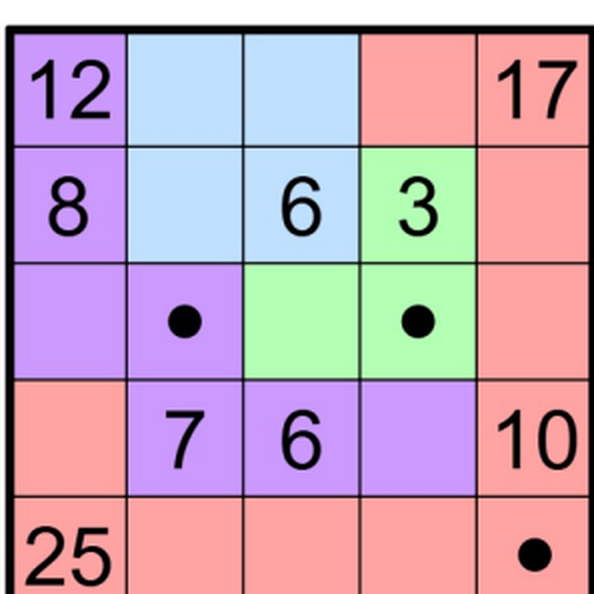
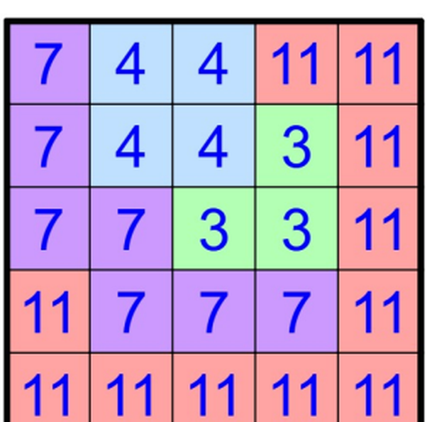

这是谜题自带的示例:官方说明底部那块 5×5 棋盘和它的解答。官方文字只有英文,这里的讲解是你的语言。
三张图取自官方谜题页(Jane Street,2026 年 10 月)。下面的讲解是本站写的。



每一格属于一个州,而州必须是关于网格对称的:镜像或旋转之后还是自己。这块 5×5 切成四个州,面积分别是 7、4、3、11(第三张图)。
如果一个州的每一种对称都恰好固定它的一格,那一格就是这个州的首府。第二张图的黑点就是首府,一共三个。面积为 4 的那个州没有首府:它的对称固定了两格或四格,所以它哪儿也去不了。
格子里的数,是从这一格走到任意首府的最小总代价。在同一个州里走一步,代价是这个州的面积;在两个州之间走一步,代价是两个州面积里较小的那个。于是第 2 行第 4 列的 3,是往 3 格州里走一步的代价;第 4 行第 2 列的 7,是往 7 格州里走一步的代价;第 5 行第 1 列的 25 = 11 + 7 + 7 —— 先在 11 格州里走一步,再跨进 7 格州走一步,再在 7 格州里走一步。两个 0 就是首府自己。
一行的行和,是所有碰这一行的州的面积之和(一个州碰到几行就算几行):37、29、31、43、55。答案是这些行和的平方之和 —— 37² + 29² + 31² + 43² + 55² = 8045,官方的答案。